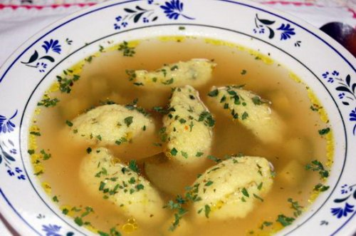
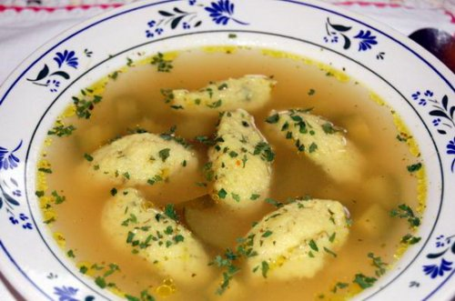
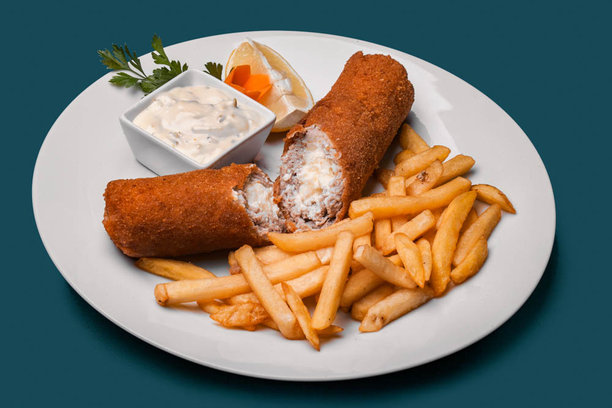
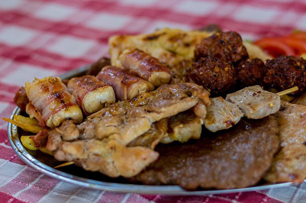
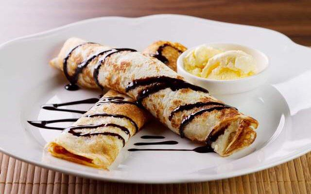
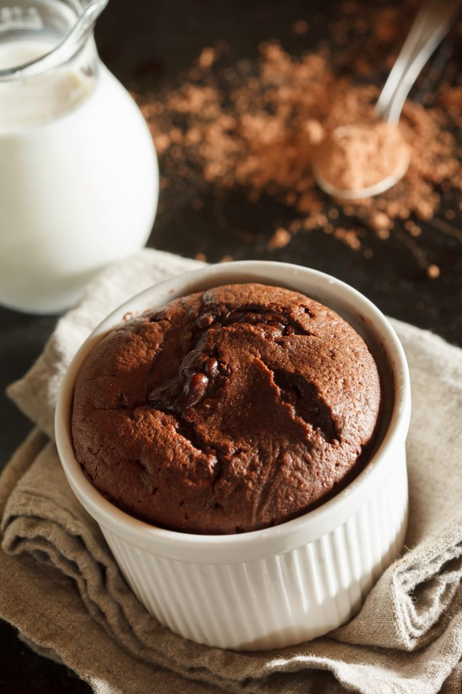
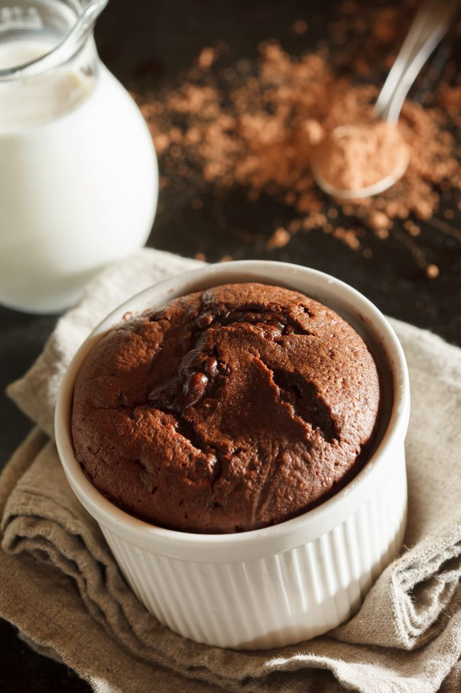
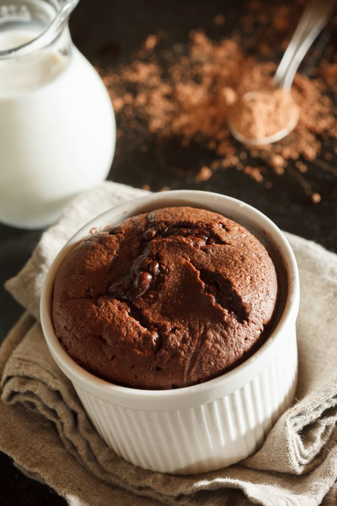

Predjela:


 

Bela čorba
Juneća krem čorba
Krem čorba od pečuraka
Domaća supa s knedlama
Glavna jela:




Karađorđeva šnicla
Mešano meso - roštilj
Žablji bataci
Sarma u vinovom listu
Deserti:


 


Palačinke
Čizkejk
Tiramisu
Sufle